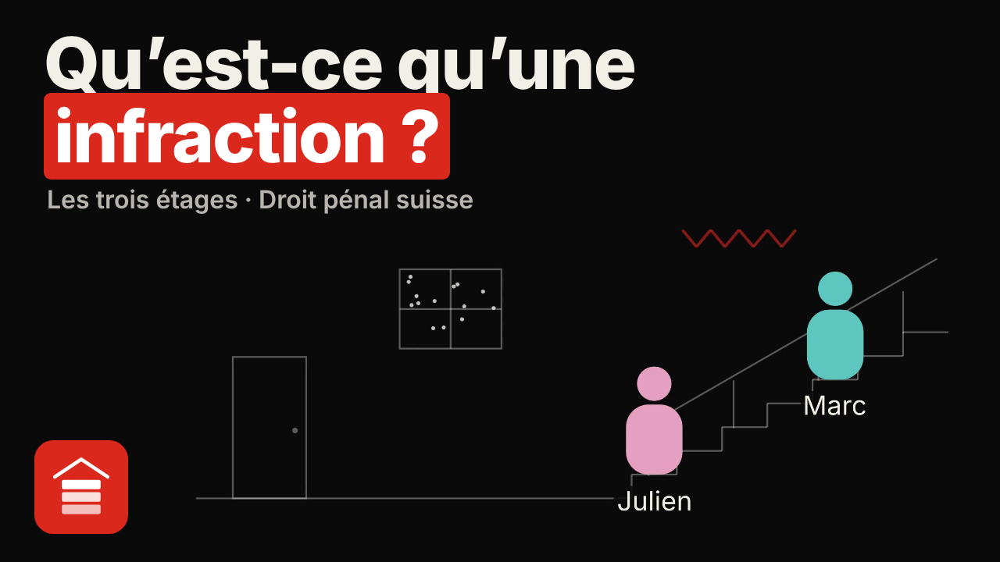
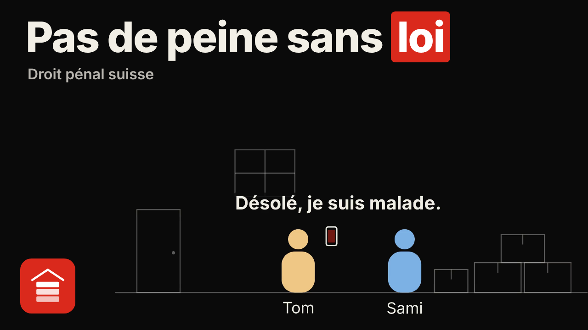
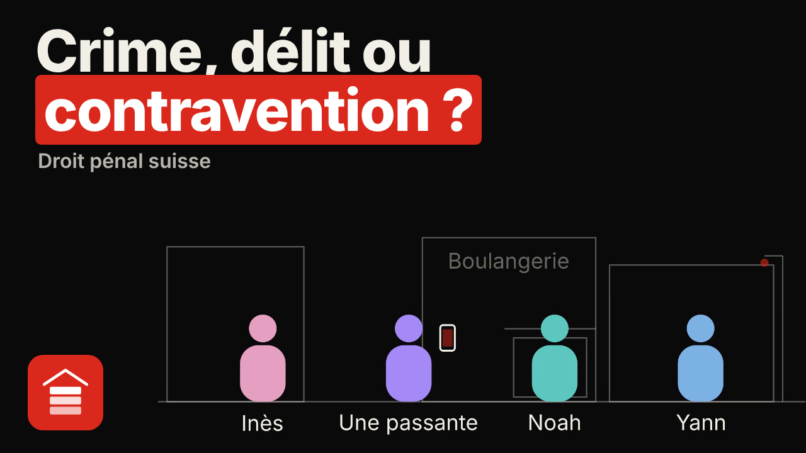
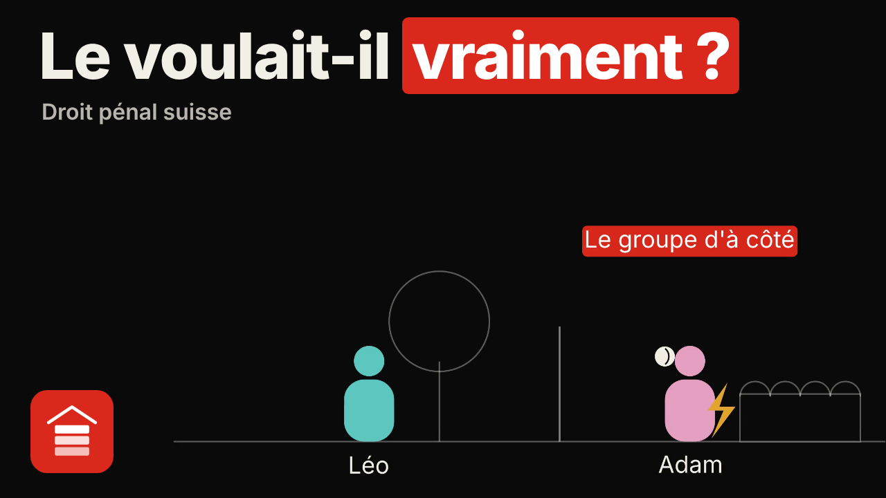
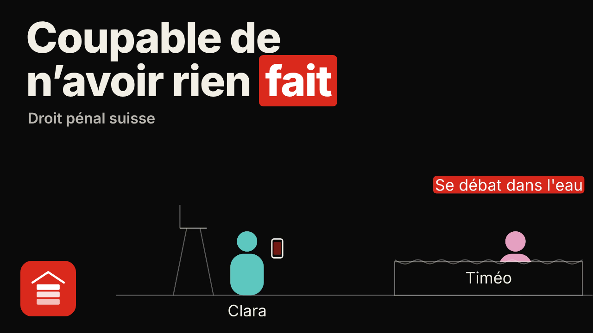
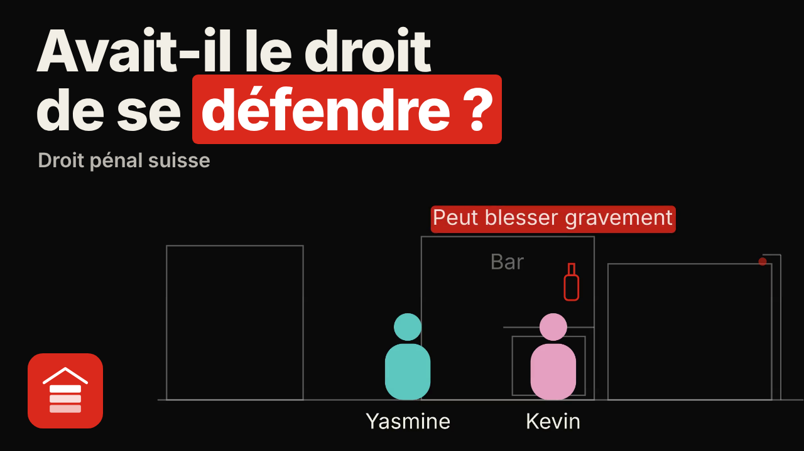

L’étude du droit
Le droit suisse, une notion à la fois.
Des vidéos courtes qui partent d’un cas concret, posent la règle, montrent le piège classique et finissent par une question. Chaque article est vérifié sur Fedlex, chaque arrêt sur le site du Tribunal fédéral, et le script complet est en accès libre.
Droit pénal général
Les vidéos

Vidéo 1Qu'est-ce qu'une infraction ? Les trois étages

Vidéo 2Pas de peine sans loi

Vidéo 3Crime, délit ou contravention ?
Bientôt
Vidéo 4Le voulait-il vraiment ?
Bientôt
Vidéo 5Coupable de n'avoir rien fait
Bientôt
Vidéo 6Avait-il le droit de se défendre ?
BientôtLa méthode
Comment une vidéo est construite
- Un cas concret. Une histoire courte, avec des personnes et un geste.
- La règle. L’article du Code, lu et expliqué, avec la jurisprudence du Tribunal fédéral quand elle compte.
- Le piège classique. L’erreur que tout le monde fait, et pourquoi c’est faux.
- Une question pour vous. La réponse est dans la description et sur la page de la vidéo.
Fiches de cours
Recevoir la fiche de chaque vidéo
Une page par notion : le cas, la règle, le piège classique, les articles et arrêts cités. Par e-mail, à chaque nouvelle vidéo.